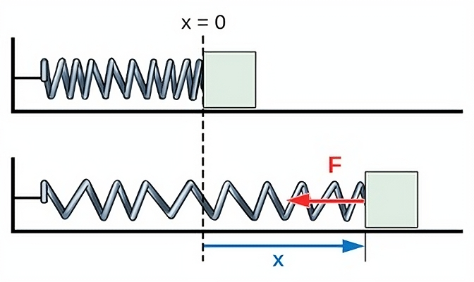
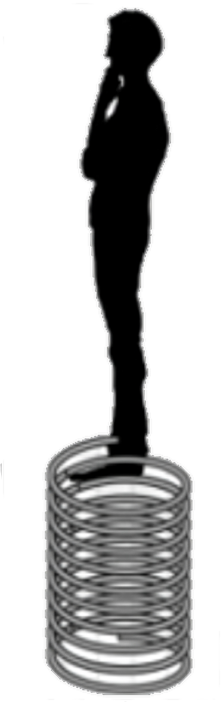
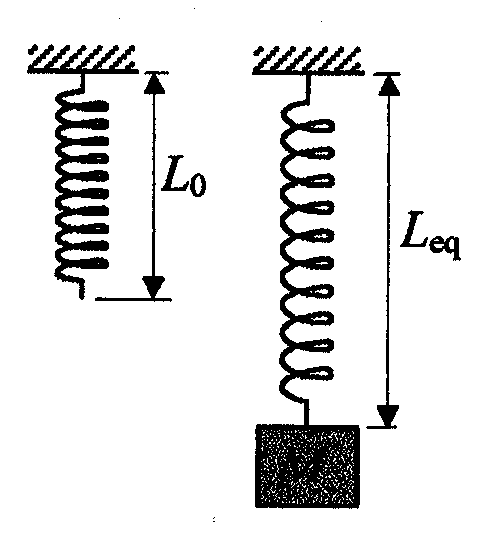
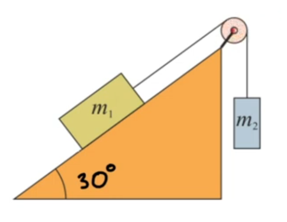
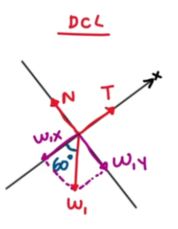
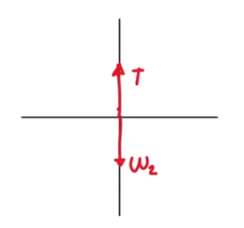
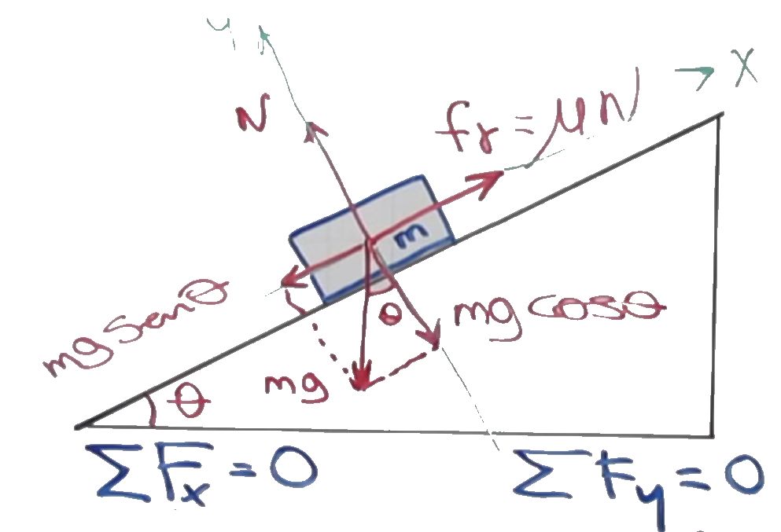

Resortes y Fuerzas en equilibrio
Resortes
Un resorte es un dispositivo mecánico que almacena energía potencial elástica cuando se deforma.

Ley de Hooke
La ley de Hooke establece que la fuerza ejercida por un resorte es proporcional a la deformación del resorte, es decir: \[ F = -k \cdot \Delta x \] donde:
- \(F\) es la fuerza ejercida por el resorte (en Newtons)
- \(k\) es la constante del resorte (en N/m)
- \(\Delta x\) es la deformación del resorte (en metros)
Ejemplo
Una persona de 60 kg está parada sobre un resorte de compresión que tiene una constante de 3000 N/m y una longitud inicial de 0.3 m. ¿Cuál es la longitud total del resorte con la persona encima?

Primero calculemos el peso ejercido por la persona: \[ P = m \cdot g = 60 \, \text{kg} \cdot 9.81 \, \text{m/s}^2 = 588.6 \, \text{N} \]
Esta fuerza es la que se opone a la fuerza del resorte, por lo que podemos igualar las fuerzas: \[ P = k \cdot \Delta x \] Reemplazamos: \[ 588.6 \, \text{N} = -3000 \, \text{N/m} \cdot \Delta x \] Despejamos \(\Delta x\): \[ \Delta x = \frac{588.6 \, \text{N}}{-3000 \, \text{N/m}} \approx -0.2 \, \text{m} \]
Para obtener la longitud total del resorte con la persona encima, sumamos la longitud inicial del resorte y la deformación: \[ L = L_0 + \Delta x = 0.3 \, \text{m} - 0.2 \, \text{m} = 0.1 \, \text{m} \] Por lo tanto, la longitud total del resorte con la persona encima es de 0.1 m.
Ejercicio 1
Un resorte suspendido por uno de sus extremos tiene una longitud de 10 cm . Si le aplicamos una fuerza de 10 N, pasa a medir 20cm. ¿Cuál es la constante del resorte? ¿Cuál sería su longitud si le aplicamos una fuerza de estiramiento de 25 N?

Para calcular la constante del resorte, utilizamos la ley de Hooke: \[ F = -k \cdot \Delta x \] Tenemos que asumir que la longitud inicial del resorte es de 10 cm. Por lo tanto, la deformación del resorte es: \[ \Delta x = L - L_0 = 20 \, \text{cm} - 10 \, \text{cm} = 10 \, \text{cm} = 0.1 \, \text{m} \] Reemplazamos en la ecuación de la ley de Hooke: \[ 10 \, \text{N} = -k \cdot 0.1 \, \text{m} \] Despejamos \(k\): \[ k = \frac{10 \, \text{N}}{-0.1 \, \text{m}} = -100 \, \text{N/m} \]
Por lo tanto, la constante del resorte es de 100 N/m. Para calcular la longitud del resorte al aplicar una fuerza de 25 N, utilizamos nuevamente la ley de Hooke: \[ F = -k \cdot \Delta x \] Sabemos que la constante del resorte es de 100 N/m, por lo que: \[ 25 \, \text{N} = -100 \, \text{N/m} \cdot \Delta x \] Despejamos \(\Delta x\): \[ \Delta x = \frac{25 \, \text{N}}{-100 \, \text{N/m}} = -0.25 \, \text{m} \] Esto significa que el resorte se estiro 25 cm hacia abajo.
Por lo tanto, la longitud total del resorte al aplicar una fuerza de 25 N es: \[ L = L_0 + \Delta x = 10 \, \text{cm} + 25 \, \text{cm} = 35 \, \text{cm} \]
Equilibrio en plano inclinado
Ejercicio 2
Un bloque de 200 N descansa sobre un plano inclinado sin fricción, que tiene una pendiente de 30°, el bloque esta atado a una cuerda sobre una polea sin fricción colocada en el extremo superior del plano y va atada a un segundo bloque. ¿Cuál es el peso del segundo bloque si el sistema se encuentra en equilibrio?

Primero, realizamos el diagrama de cuerpo libre del bloque en el plano inclinado.

Y también del bloque colgante.

El sistema está en equilibrio, por lo que la suma de fuerzas en la dirección del plano inclinado es igual a cero: \[ \sum F_x = 0 \] \[ \sum F_y = 0 \]
Descomponemos la fuerza de gravedad del bloque en el plano inclinado: \[ F_{gx} = m_1\cdot g \cdot \sin(\theta) \] \[ F_{gy} = m_1\cdot g \cdot \cos(\theta) \]
Realizando la suma de fuerzas en X para el bloque en el plano inclinado: \[ \sum F_x = T - F_{gx} = 0 \]
Ahora realizamos la suma de fuerzas en Y del bloque inclinado: \[ \sum F_y = N - F_{gy} = 0 \] Por lo que la normal es: \[ N = F_{gy} = m_1\cdot g \cdot \cos(\theta) \]
El bloque colgante no tiene fuerzas en X, por lo que la única fuerza que actúa sobre él es su peso y la tensión de la cuerda: \[ \sum F_y = T - P = 0 \] \[ T = P = m_2\cdot g \]
Nos preguntan por el peso del segundo bloque, por lo que podemos igualar las tensiones de ambos bloques: \[ T = T \] \[ m_2 \cdot g = m_1\cdot g \cdot \sin(\theta) \] \[ m_2 = m_1 \cdot \sin(\theta) \] \[ P_2 = m_2 \cdot g = m_1 \cdot g \cdot \sin(\theta) \] \[ P_2 = 200 \, \text{N} \cdot \sin(30°) \] \[ P_2 = 200 \, \text{N} \cdot 0.5 \] \[ P_2 = 100 \, \text{N} \]
Ejercicio 3
Si tenemos un bloque de masa \(m\) en una plano inclinado en un ángulo \(\theta\) con fricción, ¿cuál debe ser el coeficiente de fricción estático para que el bloque no se deslice?

Dado que el bloque no se debe deslizar, esto implica que el sistema debe estar en equilibrio. Por lo tanto:
\[ \sum F_x = 0 \] \[ \sum F_y = 0 \]
Descomponemos la fuerza de gravedad del bloque en el plano inclinado: \[ F_{gx} = m\cdot g \cdot \sin(\theta) \] \[ F_{gy} = m\cdot g \cdot \cos(\theta) \]
Recordando que la fuerza de fricción estática es: \[ F_{fr} = -\mu_s \cdot N \]
Representamos las fuerzas en Y: \[ \sum F_y = N - F_{gy} = 0 \] \[ \sum F_y = N - m\cdot g \cdot \cos(\theta) = 0 \] \[ \sum F_y = N = m\cdot g \cdot \cos(\theta) \]
Por lo que la fricción es: \[ F_{fr} = -\mu_s \cdot N = -\mu_s \cdot m\cdot g \cdot \cos(\theta) \]
Representamos las fuerzas en X: \[ \sum F_x = - F_{gx} + F_{r} = 0 \] \[ \sum F_x = - m\cdot g \cdot \sin(\theta) + (-\mu_s \cdot m\cdot g \cdot \cos(\theta)) = 0 \] \[ \sum F_x = - m\cdot g \cdot \sin(\theta) - \mu_s \cdot m\cdot g \cdot \cos(\theta) = 0 \] Despejamos el coeficiente de fricción: \[ \mu_s = \frac{m\cdot g \cdot \sin(\theta)}{-m\cdot g \cdot \cos(\theta)} \] \[ \mu_s = -\frac{\sin(\theta)}{\cos(\theta)} \] \[ \mu_s = -\tan(\theta) \]